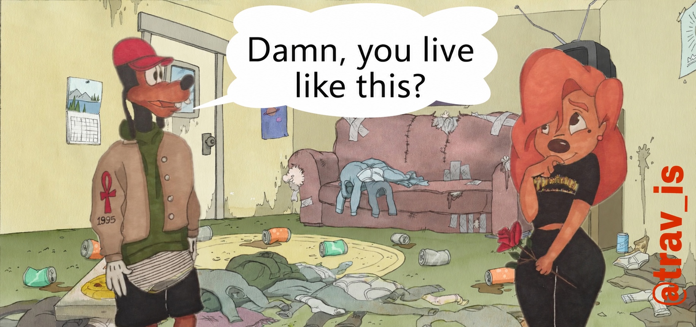
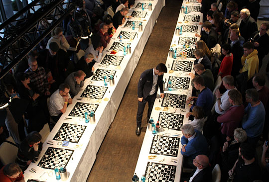
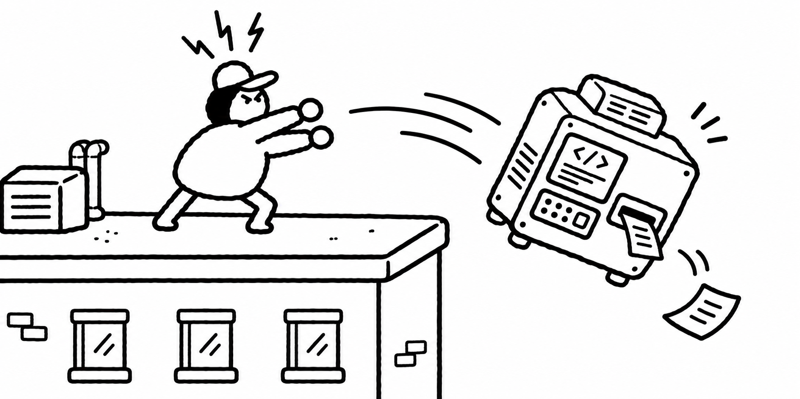
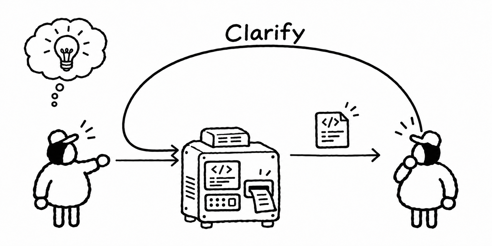
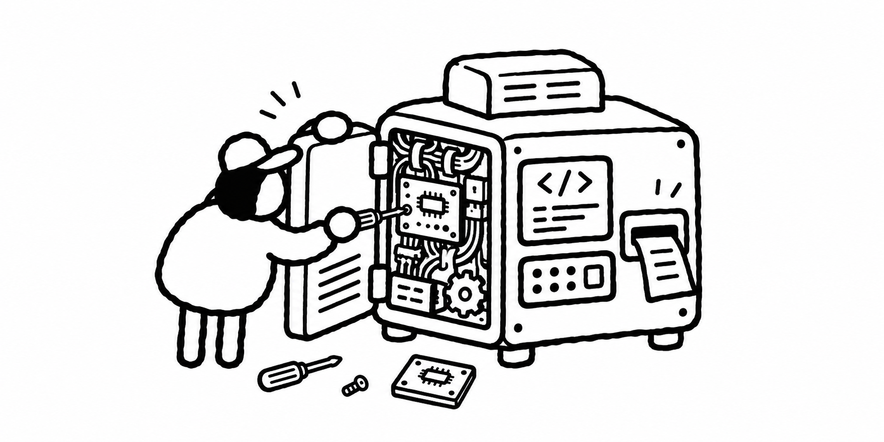
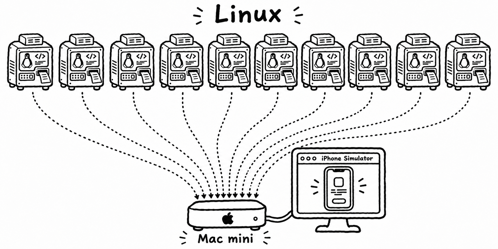
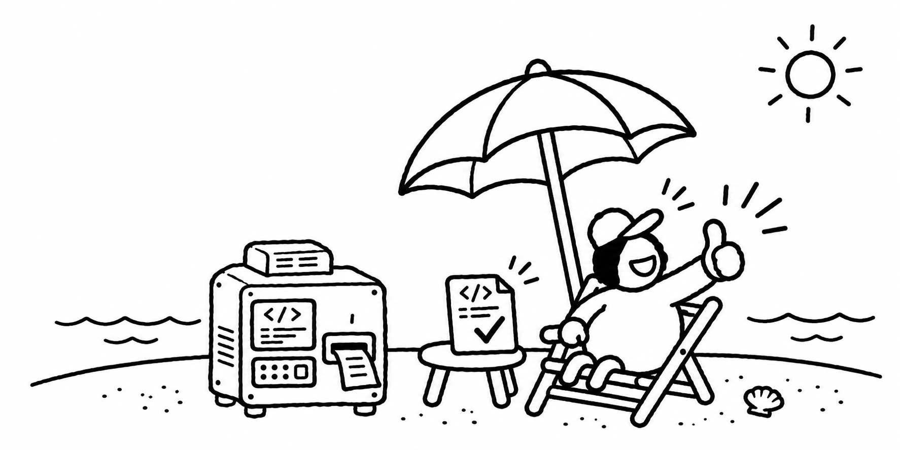
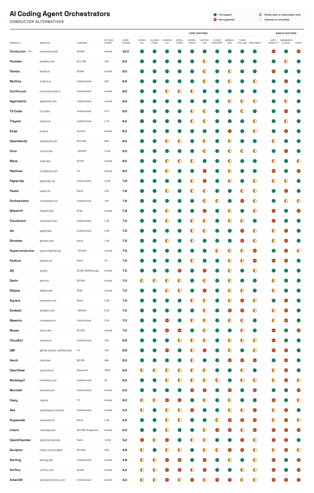
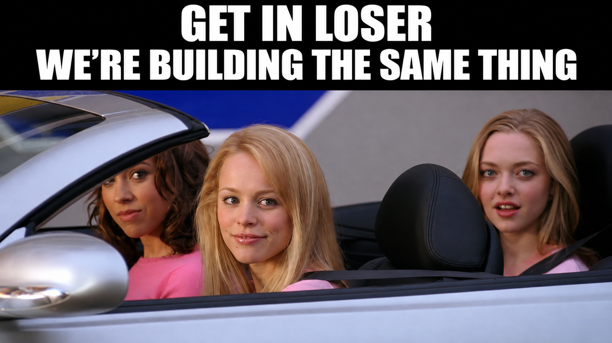
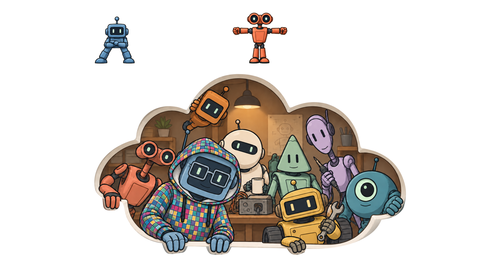

Who is very happy with their agentic review workflow?
Do you have an agent try to prove/refute every item the review agent brought up?
Something more complicated, something more simple?
Multiple rounds until comments = 0?
Forget AGI. You're Surrounded by Low-Hanging Fruit
Use this QR to ask questions during the session
Forget AGI. You're Surrounded by Low-Hanging Fruit

Only solve the problems you actually have
Slopocalypse

Dont single-shot a final solution
/simplify
Review your complete body of work.
Identify missed opportunities for simplicity, and apply them.
Reuse code that makes sense to be shared.
Remove code that is now dead.
Find leftovers from previous attempts.
Find shortcuts you took, and do them properly.
+28 -3
/review
I am also interested in that.
To open the floor: I start review in a separate session and tell the main agent to only fix important findings. Not very happy with that but good enough.
I’d replace “important” with a small decision record: triggering input, wrong behavior, affected requirement, and severity. Let the fixer mark each finding fixed, refuted with evidence, or deferred. That makes disagreement visible instead of silently dropping comments.
By hand.
I am.
I took @mattpocockuk /code-review skill and adjust it to:
1. 3-axis agent review: standards/architecture, security and spec
2. A new review round means 3 fresh-context agents
3. They default to zero trust and assume the code is flawed
4. This happens until 0 findingss
However, I think I might split standards and architecture.
Both have grown in complexity and splitting it could improve it.
Oh, of course I’ve already invested in code not have any possible debt and linting and custom linting rules strict as possible.
can you elaborate on:
- which agent makes the fix
- what context does each agent have? fresh?
The same agent that implemented.
Reviewers either suggest a fix or just highlight the finding.
Fresh = new session.
I only point them to the github issue I'm working on, give them the diff and what files (sec.md, arch.md, standards.md) must read before the review.
Whenever I don't have a github issue.
I just spawn standards and security, give them the diff and a general idea of what I did (the implementer does all the reviewer agents management).
Zero-trust by default in code reviews is 🔥. How do you ensure the “fresh-context agents” don’t overlap blind spots? Do you rotate specialties or enforce diverse heuristics per round?
Zero-trust code review is gold, but how do you handle the overhead of cycling 3 fresh-context agents per round? Does latency scale linearly, or are you hitting diminishing returns?
I build through Claude desktop and use codex plugin and have Claude instruct astra xhigh to review after finishing a task. I let Claude auto-fix found issues and surface me the issues that affect UX/data/domain to make choices. Then PR, one final review pass, done.
I am happy
T800 passes the contrarian review to a filter agent, who decides if the review is good or goes too far, and the filter edits the review before delivering it back to the toplevel agent. Toplevel agent acts on the review by dispatching work to work agents
oh and in which tool do you do this cross agent orchestration/dispatch?
Same model everywhere
Contrarian has a system prompt telling them to be a contrarian reviewer
Usually review finds nontrivial bugs leading to the patch changing a lot
The whole thing is driven by my coding harness (t800)
do you do >1 round?
do you just tell the model "be contrarian", or are you more specific?
do you end up reading the automated review+fix process after it has finished?
Many rounds. The system prompt tones down the request for contrarianism as the round count goes up
I’ve seen it go to 7 rounds, maybe more
2-3 rounds is common
The system prompt is about a page long and describes what I mean by contrarian
I am; I use multiple rounds until comments reach zero - but with a very tight prompt so it doesn't cycle forever. I require concrete evidence of a flaw.
do you drive this manually?
Nope! I built a magic auto orchestrator. I've probably spammed it before: https://github.com/AdamFrisby/CodeyBox
I do it by hand. "Please view agent feedback ..." ... But I usually give advice to not chase every edge case. "Look for the sweet spot between operational robustness, customer ux & long term maintainability. Discuss with me if unclear."
A classifier classifies. If it seems necessary it sends work to the code agent. Whether it coded or not, it then suggests a reply for me to validate. I am then noticed, and for every comment I have a UI page with the comment, suggested answer I can edit and side chat.
1. create a code review skill with everything
2. create a skill to loop over code review skill
I can give the ones I use for managing Hindsight which has lot 30+ PRs day merged in
Working on it. Three major things that have helped (1) Score findings, only fail when one finding is above threshold (2) Fix the broken idea, not just the line the review flagged (3) Run a contradiction check after that fix, in case other dependent ideas now need to change.
I've been struggling with this myself building my own issue-to-PR workflow. I've avoided reviewing the reviewers thus far, but have been testing an escalator approach where the reviewer can sometimes just directly edit/clean up the worker's changes.
I’d treat reviewer edits as a new patch, with the original finding linked to the change. Re-run the relevant checks and have another pass inspect that diff. Otherwise the escalation can quietly turn “reviewed” into “rewritten by the reviewer and approved by itself.”
Roborev works pretty well for me - I like having review results stored outside my main agents context. I can then trigger or reference review results from another agent as i like - either automatically in the background on every commit or on an adhoc basis
Mine is very simple, just one round of review, but I'm thinking of not using it anymore because it slows everything down significantly while only improving code quality and rework a little.
Pretty happy with ours. We run our review in a subagent as part of the main thread, instead of using a third party service (because...why...) and we have a dev twin universe that the agents test against to verify that what they built actually works
mine is a two-pass thing: one agent reviews and finds problems, then a second agent tries to prove the first one wrong. cuts the false positives a lot, and the findings that survive actually matter.
I wouldn't aim for comments = 0; that can reward an agent for defending weak findings. The prove-or-refute loop is valuable, but stop when each comment is either verified or explicitly dismissed with evidence.
I just go for 2 rounds of review using Codex auto review on PRs. It can go in loops for many rounds, and still find bugs. It makes the codebase more sloppy.
Cold review from 2 different llms until no P0/P1 - low level filed in backlog
>>>>>>>
Straight code analysis + AI judge on coverage,tests, and findings
>>>>>>>
Security and quality review different llms
>>>>>>>
Full PR review
I used to have cold reviews before full PR but find they actually find the bulk of the issues
Moving them upfront actually works well for me.
- Adversarial?
- Use an empty context
- Require proof a user can hit it
Steal good ideas but make them your own
Cognitive Ergonomics
Lucas, dont forget to kickoff the eval work
grill-me
github.com/mattpocock/skillsLucas, dont forget to look at the questions
Make the agent do the legwork of the evaluation

now what?

1
2
3- Add in-repo instructions
- Restrict freedom
- Improve verification


4Lucas, dont forget to look at the questions



Agentic end user testing
I want you to do end-user testing on myproduct.com.
You may not look at the source code.
Install the app by following the instructions on the website.
Use the app as a normal user would.
When you find something unclear, a bug, or another problem, create a narrated video explaining it.
If you have a suggestion for how to fix it, provide a prompt I can give to a coding agent.
Save each video and prompt as findings/$ISSUE.mp4 and findings/$ISSUE.md.